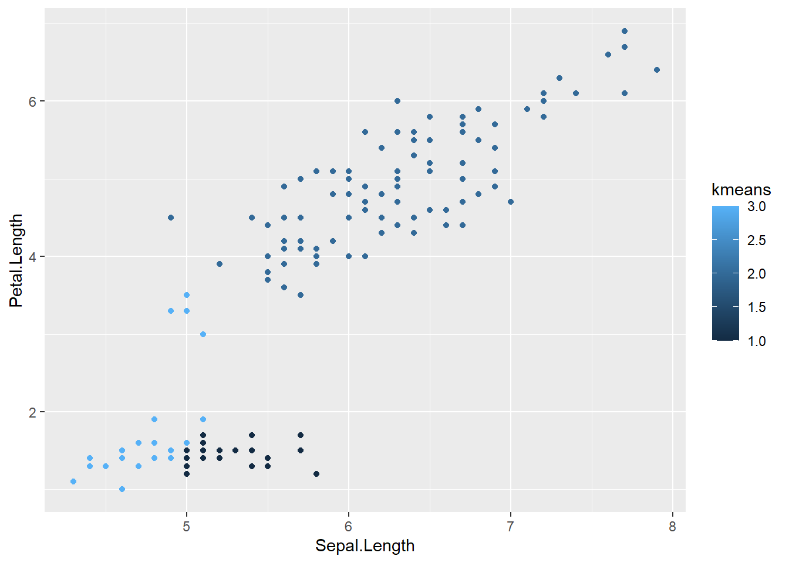
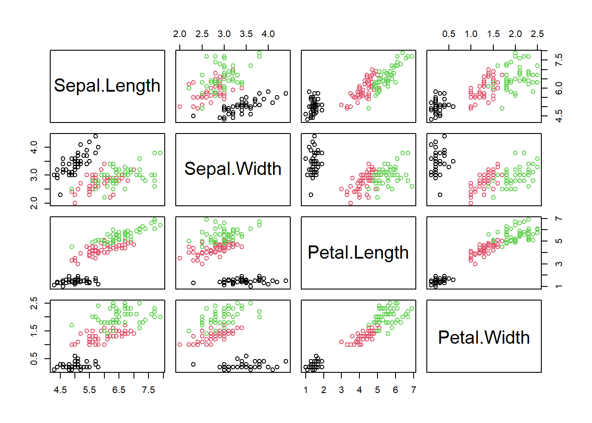
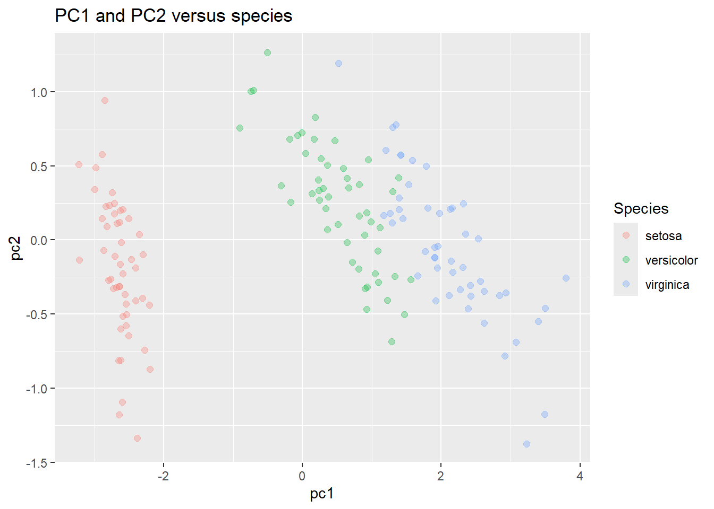

Unsupervised learning
Introduction
Cluster dataset: - Board Game Geek Data - https://github.com/rfordatascience/tidytuesday/tree/master/data/2019/2019-03-12
Error in weather predictions https://github.com/rfordatascience/tidytuesday/tree/master/data/2022/2022-12-20
k-means
k-means clustering is an technique that automatically assigns individual data points to groups. It’s useful for finding natural groups in your data.
Here are some resources:
- Conceptual overview: k-means: an explorable explainer
- R code walkthrough: Unsupervised Learning: k-means
- Deep dive Hands-on machine learning with R
We will be using the iris dataset extensively.

Iris Data
We are going to try and use the sepal/petal lengths/widths to automatically identify the 3 different types of iris flowers.
Below shows one sample plot, which compares the Sepal Length against the Petal Length. But, we have a lot of possible combinations.
library(tidyverse)
# Load iris data into a tibble
data("iris")
t_iris <- tibble(iris)
# Plot petals
ggplot( data=t_iris, mapping = aes( x=Sepal.Length, y=Petal.Length, color=Species)) +
geom_point() +
labs( title = 'Iris dataset: species variable')k-means algorithm result
We can use k-means to see which combination of attributes lets us have the highest accuracy.
library(tidyverse)
# Load iris data into a tibble
data("iris")
t_iris <- tibble(iris)
# Run the kmeans algorithm:
# x is a tibble, which should only have numeric data
# centers is the number of clusters we want
# nstart says how many random starting points we should try out (default to 10)
kresult <- kmeans(
x = select(t_iris, Sepal.Length, Petal.Length),
centers = 3,
nstart = 10
)
print(kresult)## K-means clustering with 3 clusters of sizes 41, 58, 51
##
## Cluster means:
## Sepal.Length Petal.Length
## 1 6.839024 5.678049
## 2 5.874138 4.393103
## 3 5.007843 1.492157
##
## Clustering vector:
## [1] 3 3 3 3 3 3 3 3 3 3 3 3 3 3 3 3 3 3 3 3 3 3 3 3 3 3 3 3 3 3 3 3 3 3 3 3 3
## [38] 3 3 3 3 3 3 3 3 3 3 3 3 3 1 2 1 2 2 2 2 2 2 2 2 2 2 2 2 2 2 2 2 2 2 2 2 2
## [75] 2 2 1 1 2 2 2 2 2 2 2 2 2 2 2 2 2 2 2 2 2 2 2 2 3 2 1 2 1 1 1 1 2 1 1 1 1
## [112] 1 1 2 2 1 1 1 1 2 1 2 1 2 1 1 2 2 1 1 1 1 1 1 1 1 1 1 2 1 1 1 2 1 1 1 2 1
## [149] 1 2
##
## Within cluster sum of squares by cluster:
## [1] 20.407805 23.508448 9.893725
## (between_SS / total_SS = 90.5 %)
##
## Available components:
##
## [1] "cluster" "centers" "totss" "withinss" "tot.withinss"
## [6] "betweenss" "size" "iter" "ifault"Look at the results of k-means to see how well the algorithm worked.
There are several useful outputs:
cluster: vector of numbers, one per input row, showing the cluster for each row. Use this to assign each of your original data points to a cluster.centers: matrix of cluster centers. Use this to plot the center of each cluster on a chart.tot.withiness: total within cluster sum of squares, i.e.sum(withinss). We want this to be as small, so each cluster is tightly defined.between: between-cluster sum of squares. We want this to be large, showing that each cluster is far away from the other clusters.size: number of points in each clusteriter: number of times the algorithm ran before stopping
To see a visualization of sum of square, see https://shiny.rit.albany.edu/stat/visualizess/
Minimal example
This is a minimal example, but can be significantly improved in the full template.
library(tidyverse)
# Load iris data into a tibble
data("iris")
t_iris <- tibble(iris)
# Run the kmeans algorithm:
kresult <- kmeans(
x = select(t_iris, Sepal.Length, Petal.Length),
centers = 3,
)
# Add the new kmeans2 column, using kresult's cluster vector.
t_iris <- mutate(t_iris, kmeans = (kresult$cluster))
# Plot petals
ggplot(data = t_iris) +
geom_point(mapping = aes( x = Sepal.Length, y = Petal.Length, color = kmeans)
)
Example with nicer plot showing clusters
library(tidyverse)
# Load iris data into a tibble
data("iris")
t_iris <- tibble(iris)
# Give a seed value so that we get the same results each time
set.seed(1)
# Run the kmeans algorithm:
# x is a tibble, which should only have numeric data
# centers is the number of clusters we want
# nstart says how many random starting points we should try out (default to 10)
kresult <- kmeans(
x = select(t_iris, Sepal.Length, Petal.Length),
centers = 3,
nstart = 10
)
# Add the new kmeans2 column, using kresult's cluster vector.
# Use factor to turn the cluster from a number to a categorical variable.
t_iris <- mutate(t_iris, kmeans = factor(kresult$cluster))
# Plot petals
ggplot() +
# Plot each point
geom_point(
data = t_iris,
mapping = aes( x = Sepal.Length, y = Petal.Length, color = kmeans)
) +
# Plot the center of each cluster
geom_point(
data = as_tibble(kresult$centers),
mapping = aes( x = Sepal.Length, y = Petal.Length),
size = 6,
shape = 3) +
labs(
title = 'Iris dataset: k-means clustering',
subtitle = paste('Error:', round(kresult$tot.withinss,2))
)Example with NA handling
We can not use columns with NA values in the kmeans algorithm. We can either remove the rows with NA values, or impute them.
library(tidyverse)
library(caret)
# Load iris data into a tibble
data("iris")
# Make a tibble with some NA values
t_imputed <- select(tibble(iris), -Species)
t_imputed[2,3] <- NA
t_imputed[2,4] <- NA
# Method 1: Interpolate means for na values in tibble for a single column
t_imputed <- t_imputed %>%
mutate(Sepal.Length = ifelse(is.na(Sepal.Length),
mean(Sepal.Length, na.rm = TRUE),
Sepal.Length))
# Method 2: Use Caret library
preProc <- preProcess(t_imputed, method = "medianImpute")
t_imputed <- predict(preProc, t_imputed)
# Run the kmeans algorithm:
kresult <- kmeans(
x = t_imputed,
centers = 4,
nstart = 10
)
# Add the new kmeans2 column, using kresult's cluster vector.
# Use factor to turn the cluster from a number to a categorical variable.
t_imputed <- mutate(t_imputed, kmeans = factor(kresult$cluster))
# Add the new kmeans2 column, using kresult's cluster vector.
ggplot() +
# Plot each point
geom_point(
data = t_imputed,
mapping = aes( x = Sepal.Length, y = Petal.Length, color = kmeans)
) +
# Plot the center of each cluster
geom_point(
data = as_tibble(kresult$centers),
mapping = aes( x = Sepal.Length, y = Petal.Length),
size = 6,
shape = 3) +
labs(
title = 'Iris dataset: k-means clustering',
subtitle = paste('Error:', round(kresult$tot.withinss,2))
)Decision Trees
Decision-trees automatically create questions to split our data into groups. They are very useful for creating human-understandable models of a problem space.
The r2d3 website is a great resources for visualizing how a tree is built.
Other helpful resources:
Concept
We follow this process:
- Select an output variable
- Go through each input variable to find the best split in our output
- Split the dataset
- For each split, repeat until we reach a good ending condition
Minimal Example
Below creates a visualization of a decision tree.
Note the output for each node gives the 0.3 (proportion) of items in each class, as well as the % of rows that find their way to this node.
library(tidyverse)
library(rpart)
library(rpart.plot)
# Load data into a tibble
data(iris)
t.iris <- iris
# Create the model
# formula: output_variable ~ input_field_a + input_field_b + ...
# data: your tibble, excluding the output variable.
# method: what type of problem are we working with?
# class - predicting a discrete variable
# anova - regression for a value
m <- rpart(formula = Species ~ Sepal.Length +
Sepal.Width + Petal.Length + Petal.Width,
data = t.iris,
method = "class")
# Plot results of model
rpart.plot(m)What if we want the output of the plot as a number showing its accuracy? Add the following lines
# Give the tibble to the model, and generate a vector of predicted
# output class
predicted <- predict(m, t.iris, type = 'class')
# Add the predicted results to each row in the tibble as a field.
predicted_as_str <- paste('Predicted', predicted)
t.iris <- mutate( t.iris, predicted = predicted_as_str )
# Show a confusion matrix
table(t.iris$predicted, t.iris$Species)##
## setosa versicolor virginica
## Predicted setosa 50 0 0
## Predicted versicolor 0 49 5
## Predicted virginica 0 1 45Full example
Several other features are very helpful in pruning our decision tree.
library(tidyverse, rpart, rpart.plot)
# Load data into a tibble
data(iris)
t.iris <- iris
## Split the data into training / testing
# Find the number of rows
count_of_rows <- length(t.iris$Species)
# Create a random vector of 1s and 0s the same length
select01 <- rbinom(count_of_rows, 1, .5)
## Create a training / test set
# Add the 01 vector to the original tibble
t.iris <- mutate(t.iris, test01 = select01)
# Create a test and train tibble with this as a filter
t.iris.test <- filter(t.iris, test01 == 1)
t.iris.train <- filter(t.iris, test01 == 0)
## Create the model with TRAIN tibble
#
# minsplit: a number with the min number of rows required for a split
# minbucket: a number wiht the min number of rows required for a bucket
m <- rpart(formula = Species ~ Sepal.Length +
Sepal.Width + Petal.Length + Petal.Width,
data = t.iris.train,
method = "class",
minsplit = 2,
minbucket = 2)
# Plot results of model with the TRAINING data
rpart.plot(m)## Predict on the TEST tibble
# Create a vector of prediction results
predicted <- predict(m, t.iris.test, type = 'class')
# Add to our train tibble.
t.iris.test <- mutate(t.iris.test, predicted = predicted)
# Show results in a confusion matrix / table.
# This shows a comparison between the the actual values, and what our algorithm
# predicted (shown in upper case for clarity).
table(str_to_upper(predicted), t.iris.test$Species)##
## setosa versicolor virginica
## SETOSA 21 0 0
## VERSICOLOR 0 21 2
## VIRGINICA 0 1 24Principal Component Analysis (pca)
We use principal component analysis to reduce the number of dimensions in our data. In simpler terms, we can reduce the number of values in our data.
See this visualization before reading the below.
Some good resources are:
Prior Concept
Before getting into PCA, make sure you’re familiar with the concept
of correlations. The code below walks you through an example. The
pairs command will show a plot of various fields against
each other.
library(ggcorrplot)
data(iris)
# Create a set of pairs of scatterplots showing the relationship
# between all variables.
# argument1 is a tibble with all numeric columns to show in the plot.
# col is the color of each species
pairs(
x = select(tibble(iris), -Species),
col = iris$Species)
# View the correlations between each variable.
# Again, we use the iris dataset without the species column (text), giving
# the chart only the numeric columns
# Positive correlations shown in blue, negative in red.
# Items not meeting statistical significance are hidden.
ggcorrplot(cor(select( iris, -Species)))Concept Walk-through
We will run pca on the iris dataset.
# Give prcomp numeric values in the iris tibble.
iris_pca_results <- prcomp(select(tibble(iris), -Species))
# Show new components
summary(iris_pca_results)## Importance of components:
## PC1 PC2 PC3 PC4
## Standard deviation 2.0563 0.49262 0.2797 0.15439
## Proportion of Variance 0.9246 0.05307 0.0171 0.00521
## Cumulative Proportion 0.9246 0.97769 0.9948 1.00000# Show how they are generated from our original data
print(iris_pca_results)## Standard deviations (1, .., p=4):
## [1] 2.0562689 0.4926162 0.2796596 0.1543862
##
## Rotation (n x k) = (4 x 4):
## PC1 PC2 PC3 PC4
## Sepal.Length 0.36138659 -0.65658877 0.58202985 0.3154872
## Sepal.Width -0.08452251 -0.73016143 -0.59791083 -0.3197231
## Petal.Length 0.85667061 0.17337266 -0.07623608 -0.4798390
## Petal.Width 0.35828920 0.07548102 -0.54583143 0.7536574The summary shows each of our new principal components. Each PC is a new variable, created by testing various formulas weighting the original variables.
Each new PC (primary component) is made by multiplying existing
values by the new coefficients. For example, PC1 is
\(.36 * Sepal.Length + -.08 * Sepal.Width + .85 * Petal.Length + .35 * Petal.Width\)
Each new PC variable flattens the data across one dimension. The exact weights for each variable are chosen to maximize the amount of variation in the original dataset that is maintained in the new variable.
The second PC then does the same process again. However, now that the first has already taken up a bunch of the variation in the dataset, the new only tries to capture the remaining variation in the data. Think of the first PC as removing a bunch of the variation, and the following PCs each try to grab more of the variation until none remains.
For interpreting the data, we want each PC to have the highest proportion of variance (meaning it capture most of our data). Then, look at the weights for that PC. What variables drive a PC? That helps you name it.
Concept Illustration
Now that we have a set of PC, let’s visualize the new dimension on our data. The chart below visualizes our first primary component.
# Run PCA analysis
iris_pca_results <- prcomp(select(tibble(iris), -Species))
# The results have a new list called X, which gives the PC for each of our
# original dataset. Let's create a new tibble with the pcs, and then plot it.
plot_data <- tibble(
pc1 = iris_pca_results$x[,1],
pc2 = iris_pca_results$x[,2],
pc3 = iris_pca_results$x[,3],
Species = iris$Species
)
# Plot PC1
ggplot(data = plot_data) +
geom_point(mapping = aes( x = pc1, y = 1, color = Species),
alpha = .2,
size = 2) +
labs(title = "PC1 versus species")What about plotting 2 components?
ggplot(data = plot_data) +
geom_point(mapping = aes( x = pc1, y = pc2, color = Species),
alpha = .3,
size = 2) +
labs(title = "PC1 and PC2 versus species")
We can also more closely examine how the new PCs are formed. Examine the rotation variable. It gives us the degree to which each variable drives the PCs
# Turn into a usable tibble and add the items name
pca_tibble <- as_tibble(iris_pca_results$rotation) %>%
mutate(items = rownames(iris_pca_results$rotation) )
# Turn into long format
pca_tibble_long <- pivot_longer(pca_tibble,
cols = starts_with('PC'),
names_to = 'PCItem',
values_to = 'PCValue')
# Remove values near zero
pca_tibble_long <- filter( pca_tibble_long, PCValue > .1 | PCValue < -.1 )
# View PCs as a basic dot plot.
ggplot( data = pca_tibble_long ) +
geom_point( mapping = aes( y = items, x = PCValue, color = PCValue), size = 5) +
facet_wrap( ~ PCItem, nrow = 1) +
scale_color_gradient(low = 'red', high = 'green')Full example
In the full example, we generally want to scale the data. This is needed, as if we have radically different numerical ranges, the biggest numbers will have more influence on the model. Scaling all of our inputs according to mean/sd will give them equal impact on the outcome.
library(tidyverse)
# Load data into a tibble
data(iris)
t_iris <- iris
t_iris_numbers <- select(iris, -Species)
# Give prcomp numeric values in the iris tibble.
# scale: adjust the data so that sd = 1?
# center: should we center data around 0?
iris_pca_results <- prcomp(t_iris_numbers,
scale = TRUE,
center = TRUE)
# Plot our results
biplot(iris_pca_results)# Show new components
summary(iris_pca_results)## Importance of components:
## PC1 PC2 PC3 PC4
## Standard deviation 1.7084 0.9560 0.38309 0.14393
## Proportion of Variance 0.7296 0.2285 0.03669 0.00518
## Cumulative Proportion 0.7296 0.9581 0.99482 1.00000# Show how they are generated from our original data
print(iris_pca_results)## Standard deviations (1, .., p=4):
## [1] 1.7083611 0.9560494 0.3830886 0.1439265
##
## Rotation (n x k) = (4 x 4):
## PC1 PC2 PC3 PC4
## Sepal.Length 0.5210659 -0.37741762 0.7195664 0.2612863
## Sepal.Width -0.2693474 -0.92329566 -0.2443818 -0.1235096
## Petal.Length 0.5804131 -0.02449161 -0.1421264 -0.8014492
## Petal.Width 0.5648565 -0.06694199 -0.6342727 0.5235971